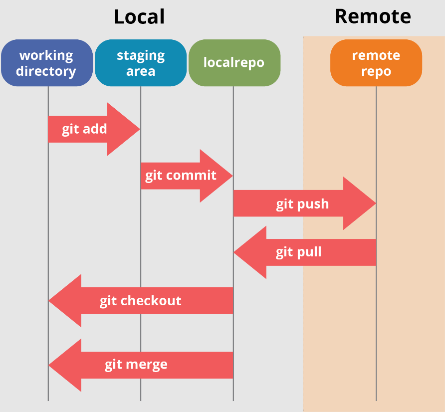
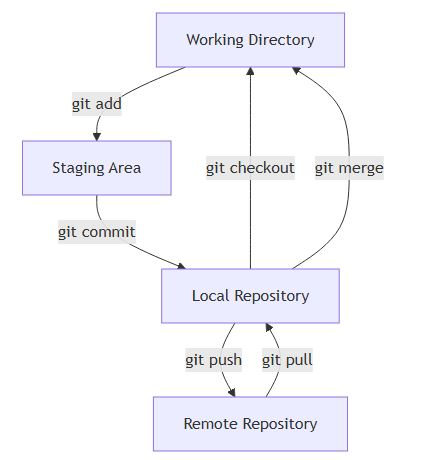
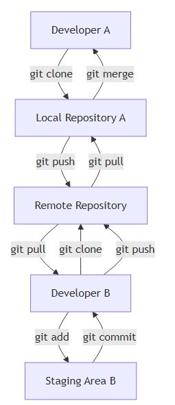
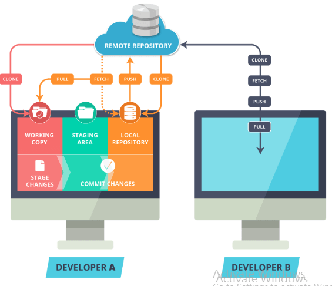

Quản trị Mã Nguồn với Git#
1. Giới thiệu Git#
Git là một hệ thống quản lý mã nguồn phân tán, được phát triển bởi Linus Torvalds vào năm 2005. Git cho phép nhiều lập trình viên làm việc trên cùng một dự án mà không lo lắng về việc ghi đè lên mã nguồn của nhau. Mỗi lập trình viên có thể làm việc trên nhánh riêng của mình và sau đó hợp nhất các thay đổi lại với nhau một cách dễ dàng.
Một trong những lợi ích lớn nhất của Git là khả năng theo dõi lịch sử thay đổi của mã nguồn. Điều này giúp dễ dàng xác định nguyên nhân gây ra lỗi và khôi phục lại phiên bản trước đó nếu cần thiết. Git cũng hỗ trợ làm việc offline, cho phép lập trình viên tiếp tục làm việc ngay cả khi không có kết nối mạng.
Git có nhiều tính năng nổi bật như khả năng xử lý xung đột mã nguồn, phân quyền truy cập, và đồng bộ hóa các thay đổi từ các nhánh khác nhau. So với các công cụ quản lý mã nguồn khác, Git được đánh giá cao về tính linh hoạt, hiệu suất và khả năng mở rộng.
1.1. Các tính năng nổi bật của Git#
Phân tán: Git là một hệ thống quản lý mã nguồn phân tán, nghĩa là mỗi lập trình viên có một bản sao đầy đủ của kho mã nguồn. Điều này giúp giảm thiểu rủi ro mất dữ liệu và cho phép làm việc offline.
Theo dõi lịch sử thay đổi: Git lưu trữ toàn bộ lịch sử thay đổi của mã nguồn, giúp dễ dàng xác định nguyên nhân gây ra lỗi và khôi phục lại phiên bản trước đó nếu cần thiết.
Quản lý nhánh: Git cho phép tạo và quản lý các nhánh một cách dễ dàng. Mỗi nhánh có thể được phát triển độc lập và sau đó hợp nhất lại với nhau mà không ảnh hưởng đến nhánh chính.
Xử lý xung đột: Git cung cấp các công cụ mạnh mẽ để phát hiện và giải quyết xung đột mã nguồn khi nhiều lập trình viên làm việc trên cùng một tệp.
Hiệu suất cao: Git được thiết kế để xử lý các dự án lớn với hiệu suất cao, giúp các thao tác như commit, merge, và pull diễn ra nhanh chóng.
Phân quyền truy cập: Git cho phép quản lý quyền truy cập của các thành viên trong nhóm, đảm bảo rằng chỉ những người được ủy quyền mới có thể thực hiện các thay đổi quan trọng.
Đồng bộ và hợp nhất thay đổi: Git cung cấp các lệnh để đồng bộ và hợp nhất các thay đổi từ các nhánh khác nhau, giúp duy trì sự nhất quán của mã nguồn.
1.2. Git so với các công cụ quản lý mã nguồn khác#
Git nổi bật so với các công cụ quản lý mã nguồn khác nhờ vào tính phân tán và khả năng làm việc offline. Trong khi các hệ thống quản lý mã nguồn tập trung như SVN (Subversion) yêu cầu kết nối liên tục với máy chủ trung tâm, Git cho phép mỗi lập trình viên có một bản sao đầy đủ của kho mã nguồn, giúp họ có thể làm việc mà không cần kết nối mạng.
Khả năng quản lý nhánh của Git cũng vượt trội hơn so với nhiều công cụ khác. Việc tạo, xóa và hợp nhất các nhánh trong Git diễn ra nhanh chóng và dễ dàng, giúp lập trình viên có thể thử nghiệm các tính năng mới mà không ảnh hưởng đến mã nguồn chính. Điều này đặc biệt hữu ích trong các dự án lớn, nơi nhiều tính năng và bản sửa lỗi được phát triển song song.
Git cũng có hiệu suất cao hơn trong việc xử lý các dự án lớn. Các thao tác như commit, merge, và pull trong Git diễn ra nhanh chóng, ngay cả khi làm việc với hàng ngàn tệp và lịch sử thay đổi phức tạp. So với các công cụ quản lý mã nguồn khác, Git được đánh giá cao về tính linh hoạt, hiệu suất và khả năng mở rộng.
2. Cài đặt và cấu hình Git#
2.1. Cài đặt Git#
2.1.1. Hướng dẫn cài đặt trên Windows#
Truy cập trang web chính thức của Git: https://git-scm.com/.
Tải xuống phiên bản Git mới nhất dành cho Windows.
Mở tệp cài đặt đã tải xuống và làm theo các bước hướng dẫn trên màn hình.
Trong quá trình cài đặt, bạn có thể chọn các tùy chọn mặc định hoặc tùy chỉnh theo nhu cầu của mình.
Sau khi cài đặt hoàn tất, mở Command Prompt hoặc Git Bash và kiểm tra phiên bản Git đã cài đặt bằng lệnh sau:
git --versionNếu bạn thấy phiên bản Git hiển thị, quá trình cài đặt đã thành công.
2.1.2. Hướng dẫn cài đặt trên macOS#
2.1.2. Hướng dẫn cài đặt trên macOS#
Mở Terminal.
Cài đặt Homebrew nếu chưa có bằng lệnh sau:
/bin/bash -c "$(curl -fsSL https://raw.githubusercontent.com/Homebrew/install/HEAD/install.sh)"
Sử dụng Homebrew để cài đặt Git bằng lệnh:
brew install git
Kiểm tra phiên bản Git đã cài đặt bằng lệnh:
git --versionNếu bạn thấy phiên bản Git hiển thị, quá trình cài đặt đã thành công.
2.1.3. Hướng dẫn cài đặt trên Linux#
Mở Terminal.
Cài đặt Git bằng trình quản lý gói của hệ điều hành của bạn. Đối với các bản phân phối dựa trên Debian như Ubuntu, sử dụng lệnh:
sudo apt update sudo apt install git
Đối với các bản phân phối dựa trên Red Hat như Fedora, sử dụng lệnh:
sudo dnf install git
Đối với các bản phân phối dựa trên Arch, sử dụng lệnh:
sudo pacman -S git
Kiểm tra phiên bản Git đã cài đặt bằng lệnh:
git --versionNếu bạn thấy phiên bản Git hiển thị, quá trình cài đặt đã thành công.
2.2. Cấu hình Git#
Lý do cần phải cấu hình Git#
Cấu hình Git là bước quan trọng để đảm bảo rằng các thao tác và thay đổi bạn thực hiện được ghi nhận đúng cách. Dưới đây là một số lý do chính cần phải cấu hình Git:
Xác định danh tính người dùng: Git sử dụng thông tin người dùng để gắn nhãn các commit. Việc cấu hình tên và email giúp xác định ai đã thực hiện các thay đổi, điều này rất quan trọng trong các dự án làm việc nhóm.
Thiết lập các tùy chọn mặc định: Cấu hình Git cho phép bạn thiết lập các tùy chọn mặc định như trình soạn thảo văn bản, công cụ hợp nhất, và các cài đặt khác để phù hợp với quy trình làm việc của bạn.
Quản lý quyền truy cập: Trong các dự án lớn, việc cấu hình Git giúp quản lý quyền truy cập và đảm bảo rằng chỉ những người được ủy quyền mới có thể thực hiện các thay đổi quan trọng.
Tối ưu hóa hiệu suất: Cấu hình Git cho phép bạn điều chỉnh các thiết lập để tối ưu hóa hiệu suất làm việc, đặc biệt là khi làm việc với các kho mã nguồn lớn.
Đảm bảo tính nhất quán: Việc cấu hình Git giúp đảm bảo rằng tất cả các thành viên trong nhóm làm việc theo cùng một quy trình và tiêu chuẩn, giúp duy trì tính nhất quán của mã nguồn.
Tích hợp với các công cụ khác: Cấu hình Git cho phép tích hợp với các công cụ và dịch vụ khác như GitHub, GitLab, và các hệ thống CI/CD, giúp tự động hóa quy trình phát triển phần mềm.
2.2.1. Cấu hình thông tin người dùng#
Mở Terminal hoặc Command Prompt.
Thiết lập tên người dùng bằng lệnh:
git config --global user.name "Tên của bạn"
Thiết lập email người dùng bằng lệnh:
git config --global user.email "email@example.com"
Kiểm tra lại cấu hình đã thiết lập bằng lệnh:
git config --list
Nếu bạn thấy tên và email hiển thị đúng, quá trình cấu hình đã thành công.
2.2.2. Kiểm tra cấu hình hiện tại#
Mở Terminal hoặc Command Prompt.
Sử dụng lệnh sau để kiểm tra cấu hình hiện tại của Git:
git config --list
Lệnh này sẽ hiển thị tất cả các thiết lập cấu hình hiện tại của Git, bao gồm tên người dùng, email, và các tùy chọn khác.
3. Làm việc với Repository#
3.1.1. Định nghĩa Code Repository#
Code Repository (kho mã nguồn) là một nơi lưu trữ mã nguồn của dự án phần mềm. Nó cho phép các lập trình viên lưu trữ, quản lý và theo dõi các thay đổi của mã nguồn theo thời gian. Một repository có thể chứa toàn bộ lịch sử phát triển của dự án, bao gồm các phiên bản khác nhau của mã nguồn, các nhánh phát triển, và các commit ghi lại từng thay đổi cụ thể.
Repository có thể được lưu trữ cục bộ trên máy tính của lập trình viên (local repository) hoặc trên một máy chủ từ xa (remote repository) để hỗ trợ làm việc nhóm và đồng bộ hóa các thay đổi giữa các thành viên trong nhóm.
3.1.2. Local Repository#
Local Repository là kho mã nguồn được lưu trữ trên máy tính cá nhân của lập trình viên. Nó cho phép lập trình viên làm việc với mã nguồn mà không cần kết nối mạng. Các thay đổi được thực hiện và lưu trữ cục bộ trước khi được đẩy lên remote repository.
3.1.2.1. Khởi tạo Repository#
Để khởi tạo một repository mới, sử dụng lệnh sau trong thư mục dự án của bạn:
git init
Lệnh này sẽ tạo một thư mục ẩn .git chứa tất cả các tệp cần thiết để quản lý repository.
3.1.2.2. Kiểm tra trạng thái Repository#
Để kiểm tra trạng thái hiện tại của repository, sử dụng lệnh:
git status
Lệnh này sẽ hiển thị các tệp đã thay đổi, các tệp mới chưa được theo dõi, và các tệp đã được thêm vào staging area.
3.1.2.3. Ghi lại thay đổi (Commit)#
Để ghi lại các thay đổi vào repository, trước tiên bạn cần thêm các tệp vào staging area bằng lệnh:
git add <tên_tệp>
Sau đó, thực hiện commit các thay đổi bằng lệnh:
git commit -m "Thông điệp commit"
Thông điệp commit nên ngắn gọn và mô tả rõ ràng các thay đổi đã thực hiện.
3.2. Remote Repository#
Remote Repository là kho mã nguồn được lưu trữ trên một máy chủ từ xa. Nó cho phép các lập trình viên trong nhóm làm việc cùng nhau và đồng bộ hóa các thay đổi.
3.2.1. Kết nối với Remote Repository#
Để kết nối repository cục bộ với remote repository, sử dụng lệnh:
git remote add origin <URL_remote_repository>
Lệnh này sẽ thiết lập một liên kết giữa repository cục bộ và remote repository.
3.2.2. Đẩy thay đổi lên Remote Repository#
Để đẩy các thay đổi từ repository cục bộ lên remote repository, sử dụng lệnh:
git push origin <tên_nhánh>
Lệnh này sẽ gửi các commit từ nhánh cục bộ lên nhánh tương ứng trên remote repository.
3.2.3. Kéo thay đổi từ Remote Repository về#
Để kéo các thay đổi từ remote repository về repository cục bộ, sử dụng lệnh:
git pull origin <tên_nhánh>
Lệnh này sẽ lấy các commit mới từ remote repository và hợp nhất chúng vào nhánh cục bộ.
4. Quản lý các nhánh (Branch)#
4.1. Khái niệm Branch#
Branch (nhánh) trong Git là một con trỏ di động trỏ đến một commit cụ thể. Khi bạn tạo một nhánh mới, bạn đang tạo một con trỏ mới để theo dõi các thay đổi của bạn. Nhánh chính (thường được gọi là main hoặc master) là nhánh mặc định khi bạn khởi tạo một repository mới.

4.2. Tạo và chuyển đổi giữa các nhánh#
Để tạo một nhánh mới, sử dụng lệnh:
git branch <tên_nhánh>
Để chuyển đổi sang nhánh mới tạo, sử dụng lệnh:
git checkout <tên_nhánh>
Hoặc bạn có thể tạo và chuyển đổi sang nhánh mới trong một bước bằng lệnh:
git checkout -b <tên_nhánh>
4.3. Hợp nhất (Merge) các nhánh#
Để hợp nhất các thay đổi từ một nhánh khác vào nhánh hiện tại, sử dụng lệnh:
git merge <tên_nhánh>
Lệnh này sẽ hợp nhất các thay đổi từ <tên_nhánh> vào nhánh hiện tại.
4.4. Giải quyết xung đột#
Khi hợp nhất các nhánh, có thể xảy ra xung đột nếu các thay đổi trên các nhánh khác nhau ảnh hưởng đến cùng một phần của mã nguồn. Để giải quyết xung đột, bạn cần chỉnh sửa các tệp bị xung đột và sau đó đánh dấu xung đột đã được giải quyết bằng lệnh:
git add <tên_tệp>
Sau khi giải quyết tất cả các xung đột, hoàn tất quá trình hợp nhất bằng lệnh:
git commit
5. Công cụ kiểm tra lịch sử#
5.1. Xem lịch sử Commit#
Để xem lịch sử các commit trong repository, sử dụng lệnh:
git log
Lệnh này sẽ hiển thị danh sách các commit, bao gồm mã hash, tác giả, ngày tháng và thông điệp commit. Bạn có thể sử dụng các tùy chọn như --oneline, --graph, và --all để hiển thị lịch sử commit một cách ngắn gọn và trực quan hơn.
5.2. Khôi phục các thay đổi#
Git cho phép bạn khôi phục lại các thay đổi trước đó bằng cách sử dụng lệnh:
git checkout <mã_commit> <tên_tệp>
Lệnh này sẽ khôi phục tệp về trạng thái của một commit cụ thể. Nếu bạn muốn hoàn tác một commit, sử dụng lệnh:
git revert <mã_commit>
Lệnh này sẽ tạo một commit mới để hoàn tác các thay đổi từ commit được chỉ định.
5.3. So sánh sự khác biệt giữa các phiên bản#
Để so sánh sự khác biệt giữa các phiên bản của tệp, sử dụng lệnh:
git diff <mã_commit1> <mã_commit2> <tên_tệp>
Lệnh này sẽ hiển thị sự khác biệt giữa hai commit cụ thể của tệp. Bạn cũng có thể so sánh sự khác biệt giữa nhánh hiện tại và nhánh khác bằng lệnh:
git diff <tên_nhánh>
Lệnh này sẽ hiển thị sự khác biệt giữa nhánh hiện tại và nhánh được chỉ định.
6. Làm việc với Remote Repository#

6.1. Cấu trúc cơ bản của Git Workflow#
6.1.1. Working Directory#
Working Directory là nơi bạn làm việc với các tệp dự án. Đây là thư mục chứa mã nguồn và các tệp liên quan.
6.1.2. Staging Area#
Staging Area là khu vực tạm thời nơi bạn thêm các thay đổi trước khi commit. Nó cho phép bạn chuẩn bị các thay đổi để ghi lại vào lịch sử của repository.
6.1.3. Remote Repository#
Remote Repository là kho mã nguồn được lưu trữ trên máy chủ từ xa, cho phép các thành viên trong nhóm làm việc cùng nhau và đồng bộ hóa các thay đổi.
6.2. Quy trình quản trị mã nguồn với Git#
6.2.1. Khởi tạo Repository#
Để khởi tạo một repository mới, sử dụng lệnh:
git init
6.2.2. Thêm tệp vào Staging Area#
Để thêm tệp vào Staging Area, sử dụng lệnh:
git add <tên_tệp>
6.2.3. Commit thay đổi#
Để commit các thay đổi, sử dụng lệnh:
git commit -m "Thông điệp commit"
6.2.4. Kết nối với Remote Repository#
Để kết nối với Remote Repository, sử dụng lệnh:
git remote add origin <URL_remote_repository>
Ví dụ về Remote Repository trên GitHub#
Để kết nối repository cục bộ với một remote repository trên GitHub, bạn cần thực hiện các bước sau:
Tạo một repository mới trên GitHub:
Truy cập GitHub và đăng nhập vào tài khoản của bạn.
Nhấp vào nút “New” để tạo một repository mới.
Điền tên repository và các thông tin cần thiết, sau đó nhấp vào nút “Create repository”.
Kết nối repository cục bộ với repository trên GitHub:
Mở Terminal hoặc Command Prompt trong thư mục dự án của bạn.
Sử dụng lệnh sau để thêm remote repository trên GitHub:
git remote add origin https://github.com/<tên_người_dùng>/<tên_repository>.git
Thay
<tên_người_dùng>bằng tên người dùng GitHub của bạn và<tên_repository>bằng tên repository bạn vừa tạo trên GitHub.
Đẩy các thay đổi từ repository cục bộ lên repository trên GitHub:
git push -u origin main
Lệnh này sẽ đẩy các commit từ nhánh
maincục bộ lên nhánhmaintrên remote repository.
6.2.5. Đẩy thay đổi lên Remote Repository#
Để đẩy các thay đổi lên Remote Repository, sử dụng lệnh:
git push origin <tên_nhánh>
6.2.6. Kéo thay đổi từ Remote Repository về#
Để kéo các thay đổi từ Remote Repository về, sử dụng lệnh:
git pull origin <tên_nhánh>
6.2.7. Quy trình làm việc với Git#
Ảnh bên dưới dưới minh họa quy trình làm việc cơ bản với Git, bao gồm các bước từ khi thay đổi mã nguồn trong thư mục làm việc (Working Directory) đến khi đẩy các thay đổi lên kho mã nguồn từ xa (Remote Repository) và ngược lại.

Working Directory: Nơi bạn thực hiện các thay đổi mã nguồn.
Staging Area: Khu vực tạm thời để chuẩn bị các thay đổi trước khi commit.
Local Repository: Kho mã nguồn cục bộ trên máy tính của bạn.
Remote Repository: Kho mã nguồn từ xa để đồng bộ hóa các thay đổi giữa các thành viên trong nhóm.
6.3. Minh họa cách làm việc nhóm với Git#

Developer A: Lập trình viên A thực hiện các thay đổi và đẩy chúng lên kho mã nguồn từ xa.
Developer B: Lập trình viên B kéo các thay đổi từ kho mã nguồn từ xa về và hợp nhất chúng vào kho mã nguồn cục bộ của mình.
Remote Repository: Kho mã nguồn từ xa để đồng bộ hóa các thay đổi giữa các thành viên trong nhóm.

7. Một số thao tác nâng cao#
7.1. Sử dụng Tag trong Git#
Tag trong Git được sử dụng để đánh dấu các điểm cụ thể trong lịch sử commit, thường là để đánh dấu các phiên bản phát hành. Có hai loại tag chính: lightweight tag và annotated tag.
Lightweight Tag: Chỉ đơn giản là một con trỏ đến một commit cụ thể.
git tag <tên_tag>
Annotated Tag: Lưu trữ thêm thông tin như tên tác giả, ngày tháng và thông điệp.
git tag -a <tên_tag> -m "Thông điệp tag"
Để đẩy tag lên remote repository, sử dụng lệnh:
git push origin <tên_tag>
7.2. Rebase và sự khác biệt với Merge#
Rebase và Merge đều được sử dụng để hợp nhất các nhánh, nhưng chúng hoạt động khác nhau.
Merge: Kết hợp các thay đổi từ nhánh khác vào nhánh hiện tại, tạo ra một commit hợp nhất.
git merge <tên_nhánh>
Rebase: Di chuyển hoặc kết hợp một chuỗi các commit vào một nhánh khác, giúp lịch sử commit trở nên gọn gàng hơn.
git rebase <tên_nhánh>
Rebase có thể làm cho lịch sử commit tuyến tính hơn, nhưng cần cẩn thận khi sử dụng vì nó có thể làm thay đổi lịch sử commit.
7.3. Làm việc với Submodule#
Submodule trong Git cho phép bạn nhúng một repository khác vào bên trong một repository chính. Điều này hữu ích khi bạn muốn sử dụng một thư viện hoặc dự án khác như một phần của dự án của mình.
Thêm Submodule:
git submodule add <URL_repository_submodule> <đường_dẫn_thư_mục>
Cập nhật Submodule:
git submodule update --remote
Khởi tạo và cập nhật tất cả các Submodule:
git submodule update --init --recursive
Submodule giúp quản lý các phụ thuộc của dự án một cách hiệu quả, nhưng cần chú ý đến việc đồng bộ hóa và cập nhật chúng.